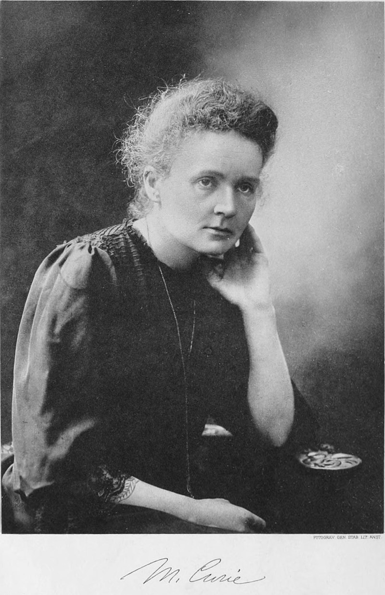

|  |
Мария Склодовская-Кюри, совместно с мужем, Пьером Кюри, и Антуаном Анри Беккерелем, является первооткрывательницей радиоактивности. Вместе с Пьером Кюри Мария открыла два новых химических элемента: радий и полоний. За эти научные достижения Мария Склодовская-Кюри получила Нобелевскую премию по физике в 1903 году и по химии в 1911 году. Помимо двух Нобелевских премий Мария Склодовская-Кюри была удостоена:
Она была членом 106 научных обществ всего мира, в том числе Французской медицинской академии, получила 20 почётных степеней. С 1911 года и до смерти Склодовская-Кюри принимала участие в престижных Сольвеевских конгрессах по физике, в течение 12 лет была сотрудником Международной комиссии по интеллектуальному сотрудничеству Лиги Наций. В 1907 году она была избрана членом-корреспондентом Петербургской академии наук, с 1926 года — почётным членом Академии наук СССР. |
|---|